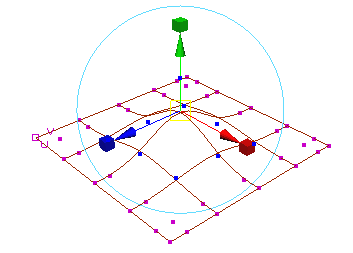

“成比例修改工具”(Proportional Modification Tool)可以用于移动操纵器，同时让周围的控制点也随移动成比例地改变与移动点之间的距离。该效果由“距离中止”(Distance Cutoff)设置进行控制。

有时会将“成比例修改”缩写为 propmod。
按比例变换选定组件
- 选择要修改的组件。只有选定组件会受到工具的影响。
- 选择“修改 > 变换工具 > 成比例修改工具”(Modify > Transformation Tools > Proportional Modification Tool)>
 。
。
- 使用“工具设置”(Tool Settings)面板中的选项，可以控制距离的测量方法以及随距离变化操纵器影响衰减的速度：
- 将“修改类型”(Modification Type)设置为“世界”(World)，以便计算距离世界空间中的距离。将其设置为“参数化”(Parametric)，以便计算跨曲面的距离（“参数化”仅适用于 NURBS）。
- 将“修改衰减”(Modification Falloff)设置为“线性”(Linear)，以便按一个稳定的速率衰减影响。将其设置为“幂”，以便极快速地影响衰减。
- 按 Insert 键或 Home 键将操纵器更换到枢轴点模式。拖动操纵器，将其移动到所需的影响中心。再次按 Insert 键或 Home 键将操纵器更换回法线模式。
- 根据组件与操纵器之间的距离，使用操纵器的其他控制柄来移动或缩放选定组件。